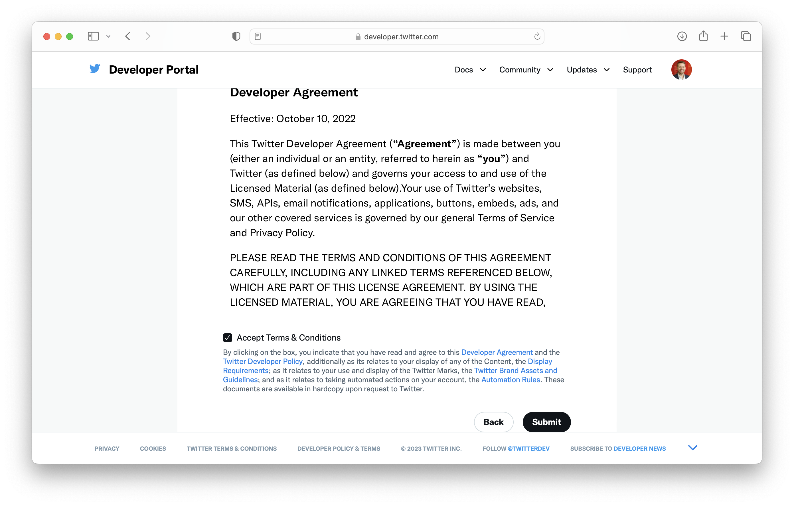
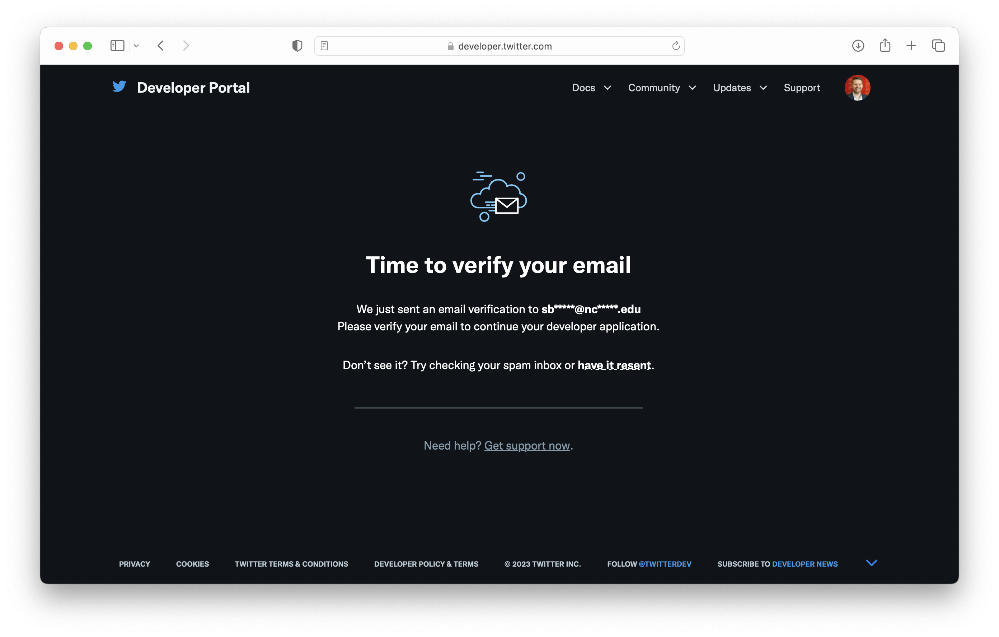

Twitter API Setup
Graduate Certificate in Learning Analytics
Introduction
In Unit 3, you’ll learn how the Twitter Application Programming Interface (API) was used to examine public sentiment around the Common Core and Next Generation Science Standards. The Twitter API facilitates analyses like the by providing companies, developers, and researchers with programmatic access to publicly available data.
What is an API?
For those new to the concept of an API, our very own Raleigh, NC-based Red Hat describes an API as a means for one product or service communicate with other products and services:
APIs are sometimes thought of as contracts, with documentation that represents an agreement between parties: If party 1 sends a remote request structured a particular way, this is how party 2’s software will respond.
As Duke University’s Chris Bail notes, “APIs have become one of the most important ways to access and transfer data online— and increasingly APIs can even analyze your data as well.” Compared to screen-scraping data from web pages, APIs ensure that data is collected legally, and with R packages like rtweet, they are considerably easier to work with than HTML or XML data scraped from the web.
For a more in-depth explanation of APIs, how they work, and a preview of some of the rtweet functions we’ll be using this summer, I highly recommend reading through Chris Bail’s Application Programming Interfaces in R tutorial.
Create a Developer Account
Log in or Sign Up for Twitter
In order to use Twitter’s API, you will need to set up a Twitter developer account, which requires a have a regular twitter account. :
- Go to twitter.com and log in or sign up for an account that you you would use for development.

Sign-Up for a Standard Developer Account
- Sign up for access to the Twitter API by going to developers.twitter.com and clicking on the “Sign up” link.

- On the next page, click the
Apply for a developer accountbutton.

Next, you’ll be asked to confirm and provide some developer information, including a developer account #UseCase.
- For this course, I recommend selecting
Studentas your use case and indicating “No” to facilitate approval.
- For this course, I recommend selecting

- Later in this guide, you will also apply for Elevated Access, which we will need to make use of the
rtweetpackage for retrieving data through the Twitter API in R. And should you determine after the course that you would like to use the Twitter API for your own research, I highly recommend applying for an Academic Research account which provides an even greater level of access to data.
Click the
Let's do thisbutton to submit a standard application.Next, you’ll be prompted to Accept the Terms and Conditions of developer agreement. Check the box and click submit.

- Verify your email.

- Congrats, you just become a become an official Twitter Developer!! Next, you be prompted to create and name your first “app.” We won’t actually be creating an app, but we will need the credentials twitter will provide next for using the Twitter API to request data.
- In the prompt provide, give you app any name you like.
- Next you will be provided with the “keys” to your app. Copy these and store them in a safe place. Your keys are what you use to authenticate yourself when making data requests using the Twitter API.

- Finally, you be prompted one more time save you keys.
Apply for an Elevated Developer Account
R packages such as rtweet and academictwitteR that make use the Twitter API v2, which requires an Elevated Access or Academic Research account. For this course, an Elevated account will be sufficient. Complete the following steps to apply:
- On left navigation bar in the developer portal, click the Products menu dropdown, select Twitter API v2, then navigate to the Elevated account tab and click “Apply.”
- Next you’ll be prompted to provide some basic information about yourself. Provide it and click “Next.”
- Next, you’ll be asked to describe you plan to use the Twitter API. Guidance is provided below and after completing, click “Next.”
Below are some suggestions for answering each of the questions you’ll be asked:
In English, please describe how you plan to use Twitter data and/or APIs. The more detailed the response, the easier it is to review and approve.
- I will be using twitter data as part of the ECI 589 Social Network Analysis and Education course, part of the Graduate Certificate in Learning Analytics program at North Carolina State University. I will be using the Twitter API for instructional purposes and will be collecting and analyze data related to tweets containing hashtags specific to education topics such as #CommonCore, as well as tweets by educational leaders in various fields.
Are you planning to analyze Twitter data?
- Select “Yes.”
- Analyses will focus on the social networks of users and surrounding specific hashtags and include interactions such as mentions and replies. Analysis will consists of creating sociograms to highligh key network measures such as desnity, degress, and reciprocity.
Will your app use Tweet, Retweet, Like, Follow, or Direct Message functionality? Please describe your planned use of these features.
- Select “No.”
Do you plan to display Tweets or aggregate data about Twitter content outside Twitter? Please describe how and where Tweets and/or data about Twitter content will be displayed outside of Twitter.
- Select “Yes.”
- Analysis of Twitter data described above will be incorporated into informal data reports and assignments and shared with other students and the instructor through the course’s private Learning Management System.
Will your product, service, or analysis make Twitter content or derived information available to a government entity?
- Select “No.”
- Next, review your application and make sure the information is correct.
Finally, read through the Developer Agreement, accept the terms, and submit.
- You may be asked follow up questions in an email so I recommend printing to PDF or taking a screenshot of your application so you can review the responses you submitted.
Wait for an email from Twitter that should arrive in the next few days that either:
- Approves your developer application
- Rejects your application
- Provide additional information before approval.
Once your application is approved you can now using the Twitter API. and proceed to the following section!
Create a Twitter App
Before you can begin pulling tweets into R, you’ll first need to create a Twitter App in your developer account. This section is borrowed largely from the rtweet package by Michael Kearney, and requires that you have set up a Twitter developer account.
Follow the steps below to set up your app:
- Navigate to developer.twitter.com/en/apps, click the blue button that says, “+ Add App.”
- Then click “Create a new App.”
- Indicated that your app will be used for “Production.”
- Give your app a name.
- Copy and save your keys and token and then click on “App Settings.”
- Under you app settings, you can view the details of your app. Click on the “Keys and tokens” tab.
- Next, click “Generate” to get you Access Token and Secret, which you will also need for pulling data from R.
- Finally, copy and save your Access Token and Secret to the same place you save your other keys and bearer token.
Congratulations!! You’ve completed your Twitter Developer set up and are ready to explore pulling data using the Twitter API in Unit 3!